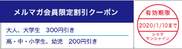
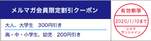

|
シネマサンシャインメールマガジン 2019/12/27号【グランドシネマサンシャイン版】 |
 |
毎月1日は映画サービスデー
どなたさまでも1,200円でご鑑賞いただけます。 次回は来週、2020年1/1（水）です！ ※3D、4DX、IMAX、ATMOS、dts-x、ScreenX、BESTIAは別途追加料金が必要となります。 |
オススメ作品
『男はつらいよ お帰り 寅さん』
12/27（金）公開
©2019 松竹株式会社
山田洋次監督による国民的人情喜劇「男はつらいよ」シリーズの50周年記念作品。 日本中を旅する主人公・車寅次郎、通称"寅さん"が、故郷の柴又に戻ってきては、家族や恋したマドンナを巻き込み、騒ぎを起こす。 破天荒で、変わり者で、自由奔放。 でも、その温かくて優しい人柄に誰もが魅了され、愛され続けた――。 50年の歩みがあったからこそ完成した映画は、生みの親である山田洋次監督自身が「今まで観たことのない作品が出来た」と驚くほど、想像を超える奇跡の映画。
監督：山田洋次
出演：渥美清、倍賞千恵子、吉岡秀隆、後藤久美子、前田吟、池脇千鶴、夏木マリ、浅丘ルリ子、美保純、佐藤蛾次郎、桜田ひより、北山雅康、カンニング竹山、濱田マリ、出川哲朗、松野太紀、林家たま平、立川志らく、小林稔侍、笹野高史、橋爪功
出演：渥美清、倍賞千恵子、吉岡秀隆、後藤久美子、前田吟、池脇千鶴、夏木マリ、浅丘ルリ子、美保純、佐藤蛾次郎、桜田ひより、北山雅康、カンニング竹山、濱田マリ、出川哲朗、松野太紀、林家たま平、立川志らく、小林稔侍、笹野高史、橋爪功
『エクストリーム・ジョブ』
2020年1/3（金）公開
© 2019 CJ ENM CORPORATION, HAEGRIMM PICTURES. CO., Ltd ALL RIGHTS RESERVED
解散の危機に直面した麻薬捜査チームが検挙のために偽装創業したのは、フライドチキン店！？ 昼はチキン屋の店員、夜は潜入捜査官―――前代未聞の大捜査劇が始まる！！
昼夜問わず走り回るが、実績はどん底、挙げ句の果てに解散の危機を迎 える麻薬班。 これ以上引き下がることのできないチームの年長者である コ班長は、国際犯罪組織の国内麻薬密搬入情報を入手し、チャン刑事、 マ刑事、ヨンホ、ジェフンの4人のチーム員たちとともに潜伏捜査に出 る。 麻薬班は24時間監視のため、犯罪組織のアジト前にあるチキン屋を 買い取り、偽装創業をおこなうことに。 まさかの絶対味覚を持つマ刑事 の隠れた才能でチキン屋は一躍名店としての噂が広まる。 捜査は後回し、 チキン商売で目まぐるしいほどに忙しくなった麻薬班に、ある日絶好の 機会が訪れるのだが…。 犯人を捕まえるのか、鶏を捕まえるのか！
昼夜問わず走り回るが、実績はどん底、挙げ句の果てに解散の危機を迎 える麻薬班。 これ以上引き下がることのできないチームの年長者である コ班長は、国際犯罪組織の国内麻薬密搬入情報を入手し、チャン刑事、 マ刑事、ヨンホ、ジェフンの4人のチーム員たちとともに潜伏捜査に出 る。 麻薬班は24時間監視のため、犯罪組織のアジト前にあるチキン屋を 買い取り、偽装創業をおこなうことに。 まさかの絶対味覚を持つマ刑事 の隠れた才能でチキン屋は一躍名店としての噂が広まる。 捜査は後回し、 チキン商売で目まぐるしいほどに忙しくなった麻薬班に、ある日絶好の 機会が訪れるのだが…。 犯人を捕まえるのか、鶏を捕まえるのか！
監督：イ・ビョンホン
出演：リュ・スンリョン イ・ハニ チン・ソンギュ イ・ドンフィ コンミョン
出演：リュ・スンリョン イ・ハニ チン・ソンギュ イ・ドンフィ コンミョン
ニュース
○『アナと雪の女王２』公開記念プレゼントキャンペーン開催！！シネマサンシャイン公式アプリから予告動画を見て応募しよう！
『アナと雪の女王２』公開記念のプレゼントキャンペーンを開催中です。 シネマサンシャイン公式スマートフォンアプリ(無料)から予告動画を見てご応募いただいた方の中から抽選で『アナと雪の女王２』豪華グッズをプレゼント！
応募締切：2020年1月10日（金）

応募締切：2020年1月10日（金）
○シネマサンシャインの新しい会員サービス『シネマサンシャイン リワード』スタート！
もっともっとオトクに映画を観よう！６ポイントで１回鑑賞無料！毎週木曜は1,100円鑑賞などお得なサービスがいっぱいです！シネマサンシャインアプリから新しい会員サービスへ登録いただけます。 是非ご登録ください。
全劇場で対応開始！
※年会費500円あり
全劇場で対応開始！
※年会費500円あり

○シネマサンシャイン「おやこシネマ」開催！
子育て中のママ、パパがお子さま連れで一緒に映画を鑑賞できる上映会を開催いたします。
小さいお子さま連れでの映画鑑賞は…
「びっくりして泣いてしまったら…」
「暗いので子供が怖がるかも…」
「子供がおしゃべりしたり歩き回るかも…」
そんな不安や心配がつきないママ、パパの為の上映会です。
音量が通常よりも小さめで、照明も明るめに設定されており、
小さなお子様でも怖がることなくご鑑賞いただけます。
今後の実施は下記となります。
1月14日(火)『スター・ウォーズ／スカイウォーカーの夜明け』
1月28日(火)『キャッツ』

小さいお子さま連れでの映画鑑賞は…
「びっくりして泣いてしまったら…」
「暗いので子供が怖がるかも…」
「子供がおしゃべりしたり歩き回るかも…」
そんな不安や心配がつきないママ、パパの為の上映会です。
音量が通常よりも小さめで、照明も明るめに設定されており、
小さなお子様でも怖がることなくご鑑賞いただけます。
今後の実施は下記となります。
1月14日(火)『スター・ウォーズ／スカイウォーカーの夜明け』
1月28日(火)『キャッツ』
○メルマガ会員限定割引クーポンプレゼント！
メルマガ会員様限定でお得な割引クーポンをプレゼント！
以下の画面をチケット購入時にご提示ください。
PCでご覧のお客様は該当部分を印刷してご提示ください。

以下の画面をチケット購入時にご提示ください。
PCでご覧のお客様は該当部分を印刷してご提示ください。

※有効期限は1月10日までになります。
※割引券1枚で2名様まで有効。 他の割引サービスとの併用はできません。
※特別興行などご利用いただけない場合がございます。
※インターネット購入（e-box、ムビチケ)ではご利用いただけません。
※期間中何回でもご利用頂けます。
池袋、ユーカリが丘、大和郡山、北島、下関、姶良の自動券売機では下記QRをご利用ください。
【一般・大学生】
【高校生以下】
【一般・大学生】
【高校生以下】
ムービークイズ
○前回のクイズ
12/20公開『スター・ウォーズ／スカイウォーカーの夜明け』の「スター・ウォーズ」シリーズで、レイア姫を演じるキャリー・フィッシャーとヨーダの声を担当するフランク・オズは、80年代のミュージカル・コメディ映画で共演しています。 その作品はなんでしょう？
12/20公開『スター・ウォーズ／スカイウォーカーの夜明け』の「スター・ウォーズ」シリーズで、レイア姫を演じるキャリー・フィッシャーとヨーダの声を担当するフランク・オズは、80年代のミュージカル・コメディ映画で共演しています。 その作品はなんでしょう？
答え：ブルース・ブラザーズ』
キャリー・フィッシャーは主人公の命を狙う謎の女役、フランク・オズは看守役で出演。
キャリー・フィッシャーは主人公の命を狙う謎の女役、フランク・オズは看守役で出演。
○今回のクイズ
12/27公開『男はつらいよ お帰り 寅さん』で50周年となる寅さんシリーズ中、寅さんは競馬で大穴を当てておいちゃん夫婦にハワイ旅行をプレゼントしましたが、その馬の名前はなんでしょう？
ヒント：寅さんの本名
今年最後の配信号となります。
2019年も皆様の心に残る作品にめぐりあえましたでしょうか。
2020年の公開作品も話題作が豊富で待ち遠しいですね。
来年も最新情報をお知らせしていきますので、引き続きグランドシネマサンシャインをどうぞよろしくお願いいたします。
それでは皆様、良いお年をお迎えくださいませ！
12/27公開『男はつらいよ お帰り 寅さん』で50周年となる寅さんシリーズ中、寅さんは競馬で大穴を当てておいちゃん夫婦にハワイ旅行をプレゼントしましたが、その馬の名前はなんでしょう？
ヒント：寅さんの本名
今年最後の配信号となります。
2019年も皆様の心に残る作品にめぐりあえましたでしょうか。
2020年の公開作品も話題作が豊富で待ち遠しいですね。
来年も最新情報をお知らせしていきますので、引き続きグランドシネマサンシャインをどうぞよろしくお願いいたします。
それでは皆様、良いお年をお迎えくださいませ！
答えは、次回のシネマサンシャインメールマガジンで！